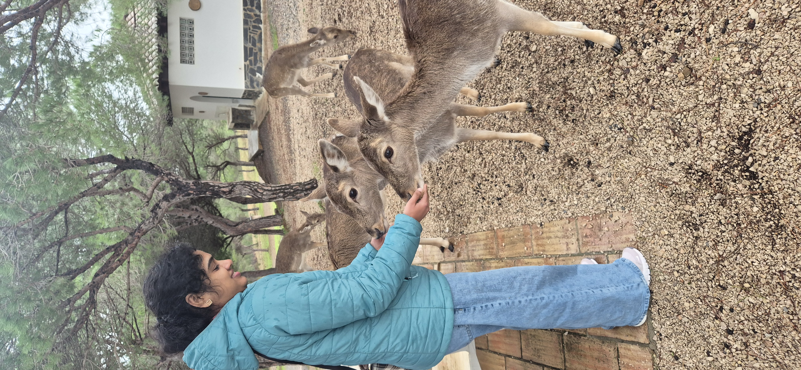
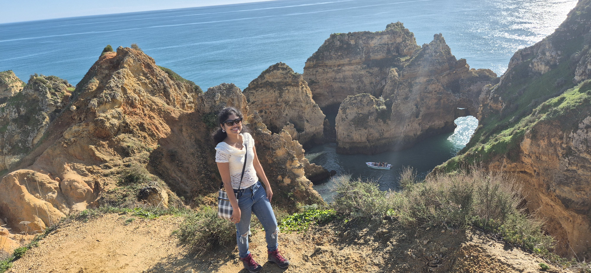

Training
42 Heilbronn • Project-based software development
Software Developer • Data Consultant • Lifelong Learner
I blend software engineering, business thinking, and analytical depth to create practical tools that make operations smarter and more resilient.

Bachelor’s in Computer Science, currently advancing through a project-based training path at 42 Heilbronn, with a strong foundation in C, SQL, and structured software design.
About Me
I enjoy transforming real-world problems into practical digital solutions. My path has moved through software development, data analysis, operations, and consulting, giving me a rare ability to connect technical execution with strategic impact.
Whether I’m writing clean C programs, shaping a database model, or building a dashboard that reveals a business story, I focus on reliability, structure, and meaningful outcomes.
42 Heilbronn • Project-based software development
Bachelor of Engineering in Computer Science
English • German • Malayalam
Start Steps AI, Google Data Analytics, Python HackerRank
Featured Projects
Delivered data cleaning, survey analysis, and dashboard-backed recommendations for assortment optimization.
Built a prototype for secure banking transactions using biometric authentication, card readers, and a MySQL-backed system.
Activities & Hobbies

Finding calm and perspective on mountain trails.

Small acts of care that bring joy and warmth.

Energy, rhythm, and a refreshing sense of freedom.

A little enhancement in creativity

Learning, reflecting, and wandering through new worlds.

Collecting views, stories, and fresh perspectives.